這篇文章是用AI（Chat GPT 5Thinking）寫的，部分由我補寫😁
2024年12月吃的😄今天造訪了沖繩市泡瀨的「烤全雞 咕咕囉咕」。
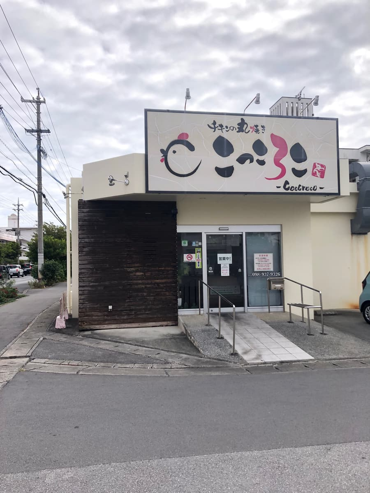
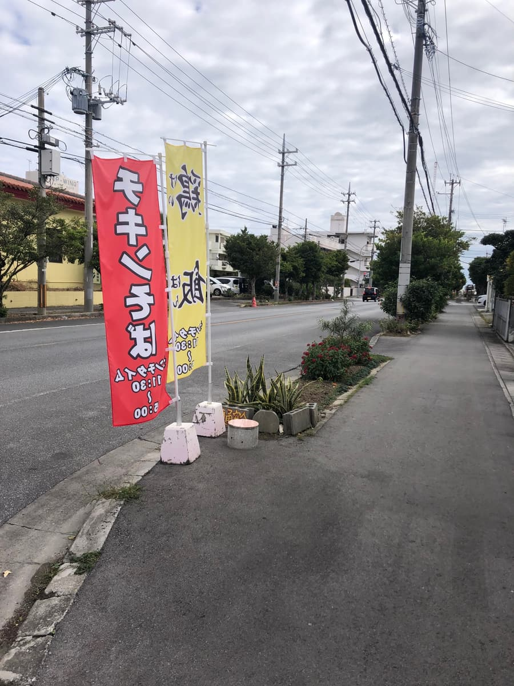
招牌外觀很可愛，路旁的白色建築搭配木紋點綴很好看呢🏠店門前還有斜坡，感覺很容易進去。
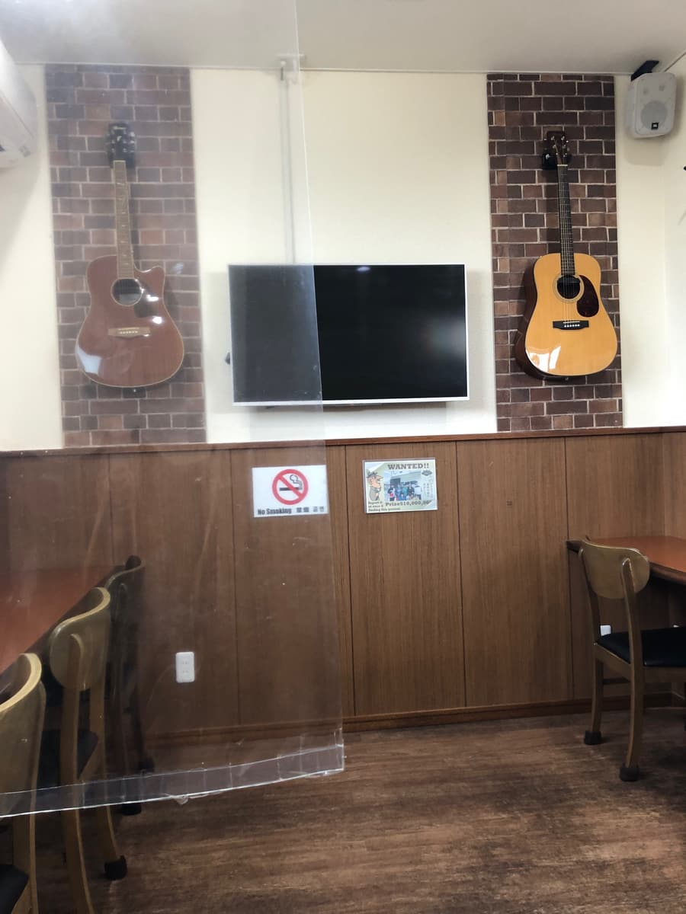
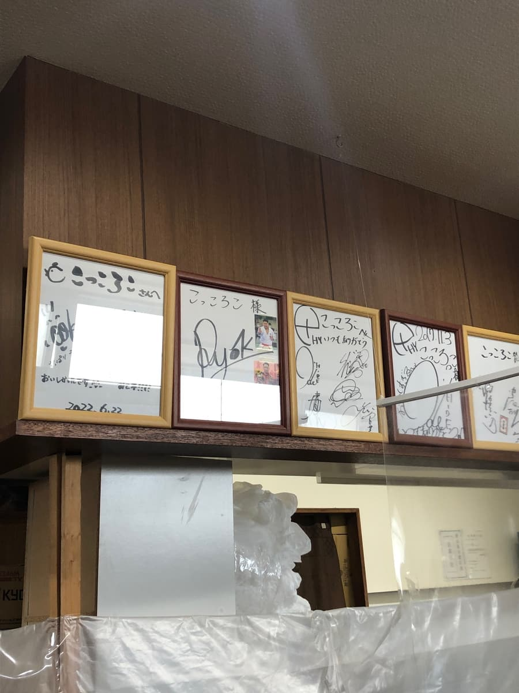
一進店裡首先映入眼簾的，是吧台上方貼滿簽名板的牆📸可以感受到深受在地人喜愛。一坐下來，烤雞的香味就已經輕輕飄進鼻子，食慾開關自然就打開了呢😄
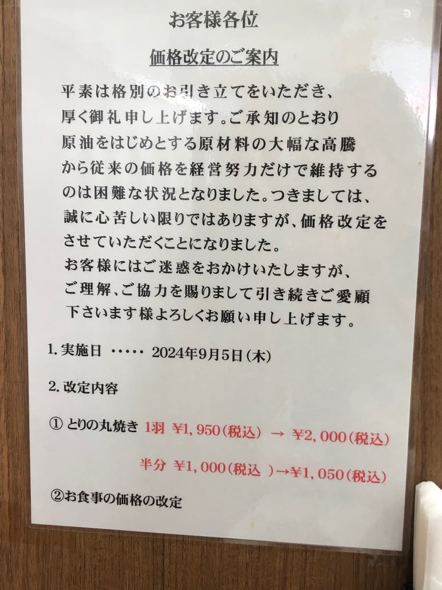
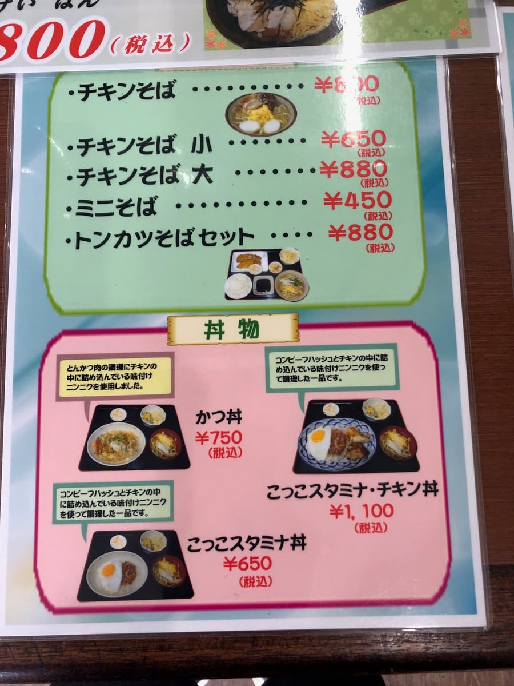
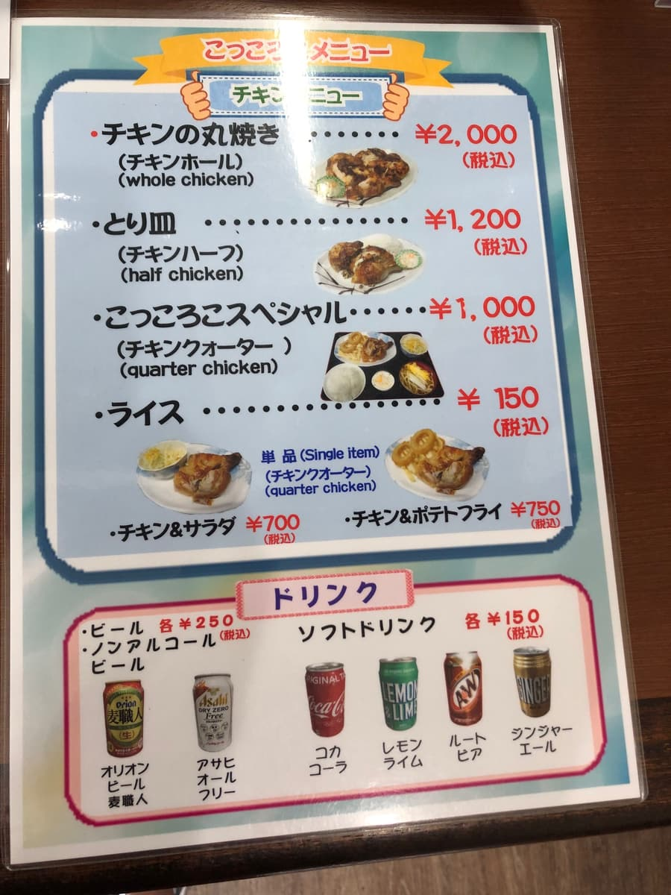
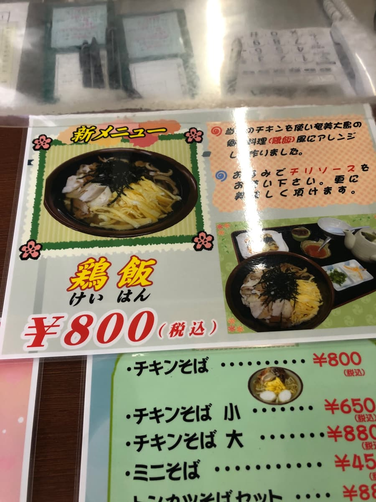
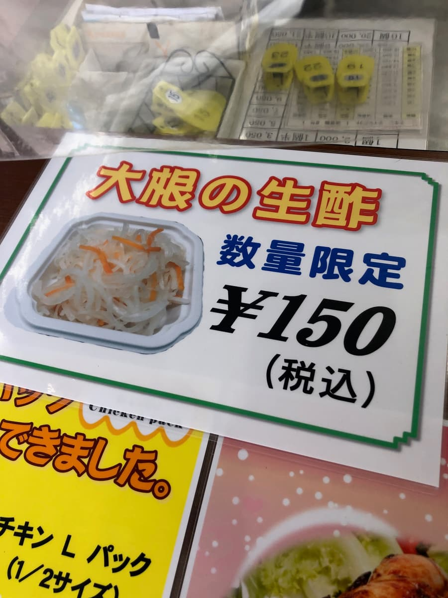
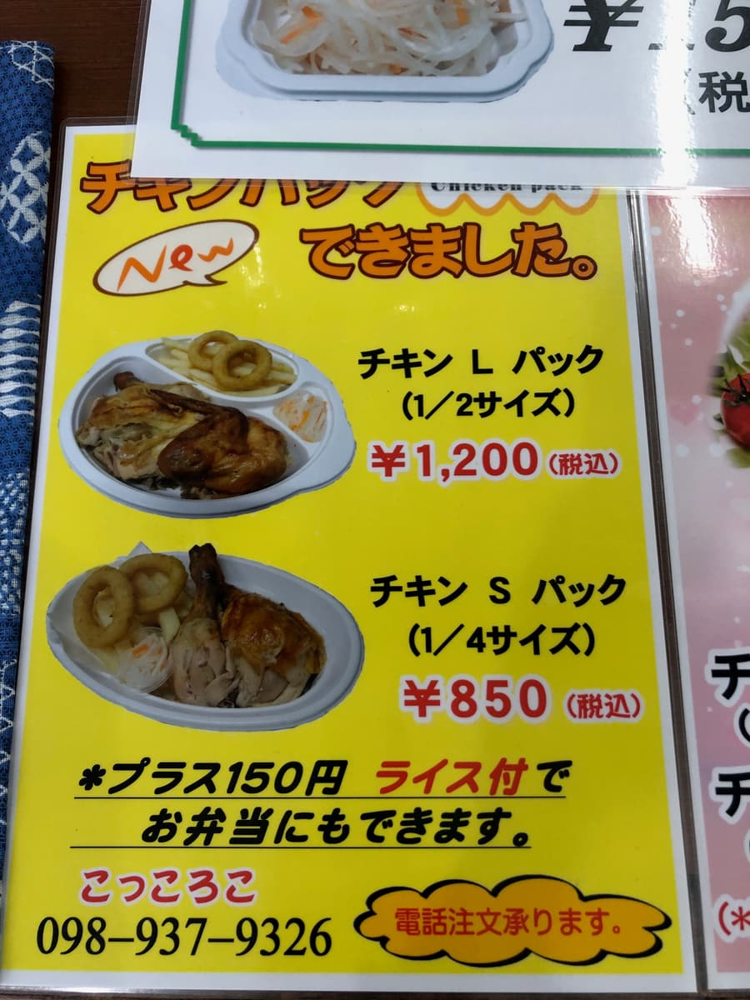
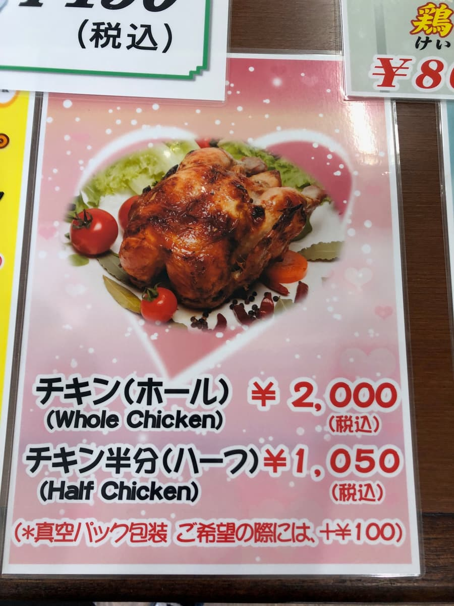
翻開菜單，主角果然是雞肉。烤全雞整隻2,000日圓，在店內享用的「雞肉盤（半隻）」1,200日圓，四分之一隻1,000日圓，品項很齊全。外帶派還有「雞肉L包（1/2）1,200日圓」「S包（1/4）850日圓」，在家一邊看電影一邊大口吃好像也不錯🚗還發現了「雞飯800日圓」這道新菜單。好像是用這裡的烤全雞來改編奄美大島的鄉土料理，就決定當作下次的功課了🍗✨
話雖如此，今天是來吃沖繩麵的，所以點了「雞肉麵」的“大碗”。
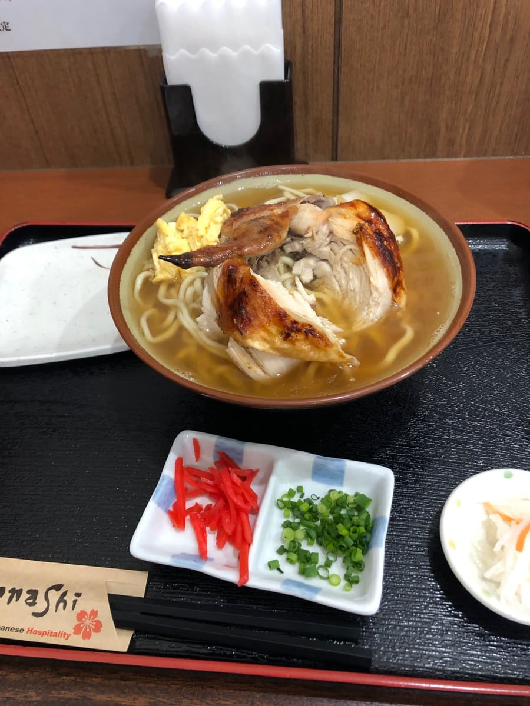
上桌的碗，就像照片一樣，烤雞大大地鎮坐在湯頭上。雞皮烤得焦香，從第一口開始醃料的蒜香就很明顯，在嘴裡有種讓人「喔！」一聲的衝擊感🧄🍜清澈的金黃色湯頭，比起所謂“雞清湯一路到底”的俐落感，更像是烤全雞的油脂和香氣慢慢融入其中的類型。不是只靠高湯的輪廓決勝負，而是用雞肉專賣店才有的焦香來取勝的感覺呢。一邊點頭心想這真是只有這裡才吃得到的味道，湯匙停不下來😋
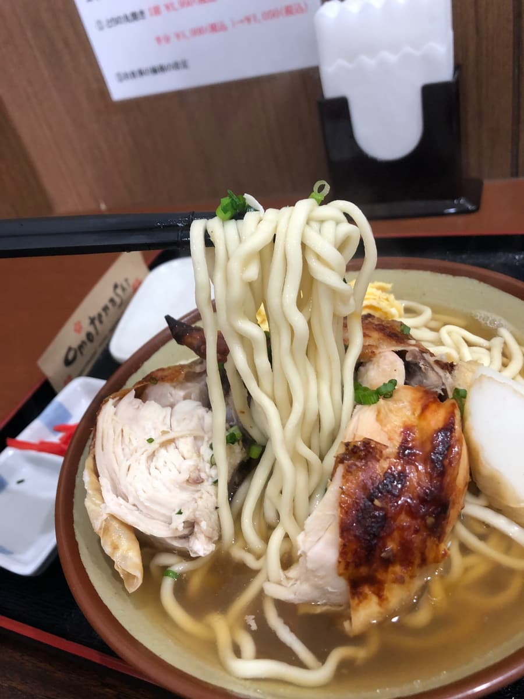
麵是中粗微捲麵。白皙滑溜，煮得偏軟。與其說是靠嚼勁拉著走，不如說是讓麵條裹上湯汁、呼嚕呼嚕吸進去的設計呢。我個人是喜歡再更有咬斷感一點，但它有能承接主角雞肉和蒜味衝擊的“包容力”，整體的流程不差。夾起麵條，香氣隨著熱氣輕輕散開，稍微加點青蔥，尾韻會變得比較輕盈。中途加入紅薑，味道一下子變得俐落，後半段的厚重感也隨之消失，這點也很棒呢🥢
再來是配料的雞肉。筷子一夾，就順著纖維鬆散開來。外皮焦香，裡面濕潤。醃料的蒜味隨著融入湯頭而變得圓潤，鮮味的層次越來越豐富，很有趣。用附上的醋拌涼菜風小菜清清口，再回到湯頭，形成一個循環，這點很令人開心呢。因為點的是“大碗”，比外表看起來更有份量，肚子吃得很飽🐔
我覺得這碗麵的有趣之處，在於它不是靠“高湯的純度”，而是靠“店家的個性”來完成的。烤雞的香氣、大蒜的風味、軟麵這三點讓世界觀很鮮明，如果抱著王道豬骨或以柴魚為主的沖繩麵想像而來，會在好的意義上被背叛。可能會有喜好分歧，但如果被問「是不是只有這裡吃得到？」，我會抬頭挺胸地回答Yes。很適合想大吃一頓的日子、下班後想補充體力的日子。一邊用桌上的紅薑和青蔥變換味道一邊吃，可以一直吃到最後都不膩喔。喜歡吃辣的人，下次“雞飯”配辣醬的提案我也很在意🌶️
店內也貼著價格調整的公告，但也因此感受到店家“要用份量讓客人滿足”的氣勢。
也有外帶和真空包裝，用在家族聚會或探班送禮也很方便📝在家準備熱湯，放上四分之一隻雞做成“我家的雞肉麵”好像也很好玩呢。有攻略觀光王道的日子，也有像這樣隨興順道去附近個性派店家的日子，我深深覺得這樣也很不錯✨
評分（9分/15分）：總而言之，「烤全雞 咕咕囉咕」的雞肉麵，是輕快地跳脫沖繩麵框架、“靠肉的美味帶著走”的一碗。正因為湯頭的方向性不是那麼好懂的類型，靠烤全雞的焦香和蒜味的衝擊，能一路大口吃到最後。正在尋找個性派店家的人、今天想好好吃一頓的日子，請務必來試試🍜
麵：★★★☆☆（3）
湯頭：★★★☆☆（3）
配料：★★★☆☆（3）